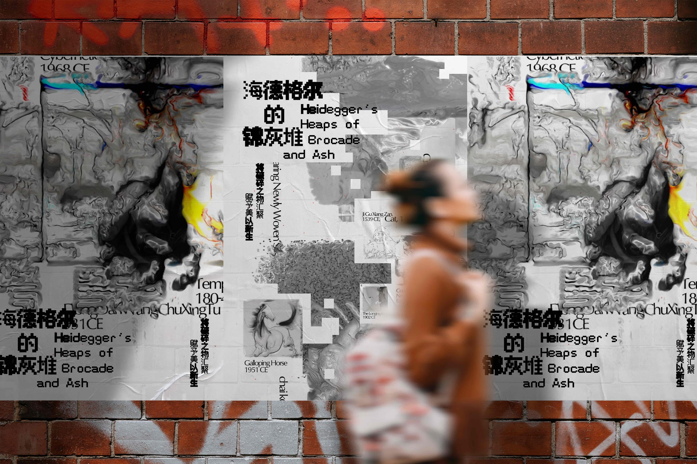
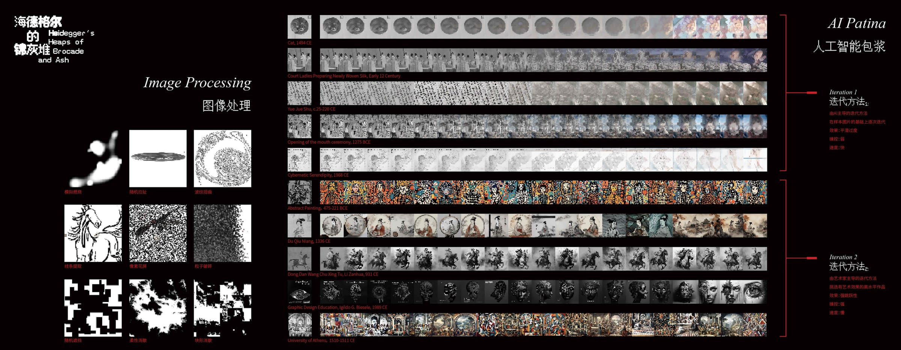
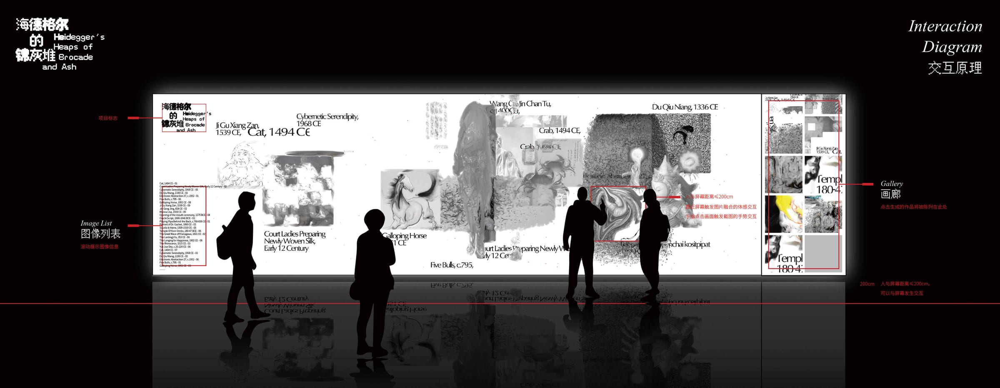
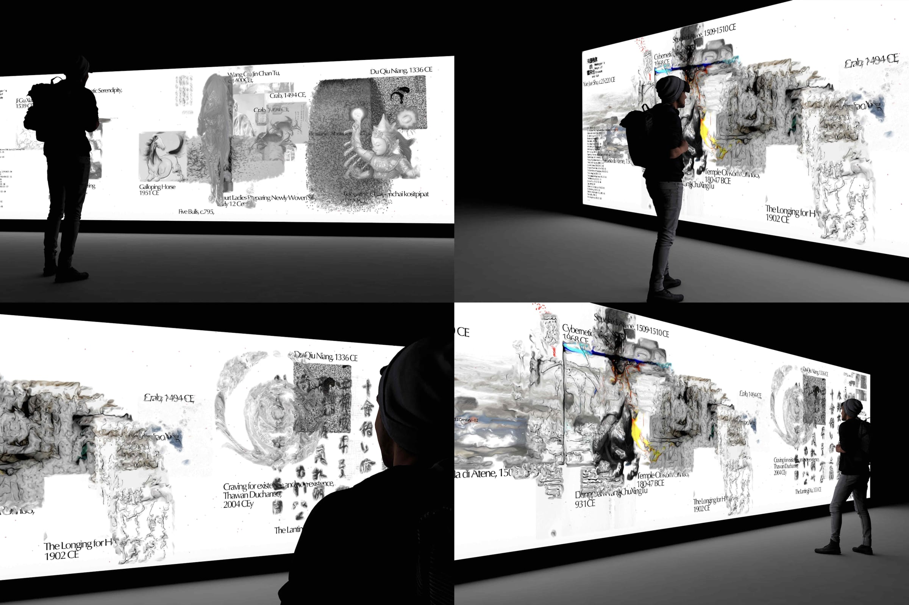

Visual Meaning in the Age of AI: Traces and Transformations
This digital interactive video artwork examines how AI reshapes the meaning of images. Drawing on Heidegger’s notion of technology as a “framework,” it explores the process of visual decay and reinterpretation. Inspired by the traditional Chinese aesthetic of “Heaps of Brocade and Ash” (锦灰堆), the piece constructs a layered visual composition that reflects the tension between machine logic and cultural memory.
🥈 Busan International Art Festival (2024)
🏅 Kunpeng Global Design Award (2024)
🥉 Hong Kong Youth Design Award (2023)
In recent years, AI has had a profound impact on artistic creation. This work visualizes AI's disruption of images, not only in form but also in meaning. I contributed to the conceptual design and technical direction.
Heidegger saw technology as a framework that distances humans from nature. This work reimagines that idea using AI's reinterpretation of image memory and decay.
Heaps of Brocade and Ash is a visual tradition of disorder and repair, reuniting fragments of the past to produce new beauty. It inspired how we layered AI-altered images to simulate deterioration and poetic recomposition.

AI patina is our term for AI's erosion and mutation of iconic images. We developed iterative AI techniques to generate glitch-like layering effects, producing visual entanglement and loss.

This piece includes a somatosensory interactive installation. Viewers alter the visuals with motion or gestures, showing how human presence still reshapes the technological framework.
